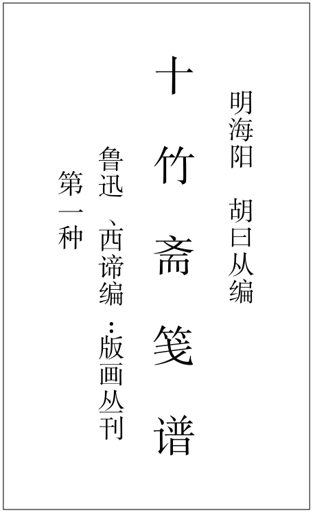
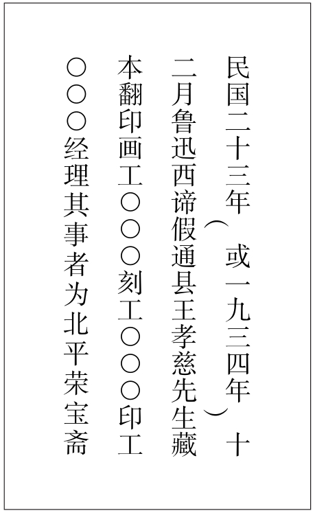

西谛先生：
廿四信顷收到。《博古页子》能全用黄罗纹纸，好极，因毛边脆弱，总令人耿耿于心也。但北平工价之廉，真出人意外。
《十竹笺谱》牌子等，另拟一纸呈上，乞酌夺。生活的广告[696]，未见。《北平笺谱》在店头只内山有五六部，已涨价为廿五元，昨见生活代人以二十元买去，吾国多疑之君子，早不豫约，可叹。鉴于前车，以后豫约或可较为踊跃欤？
顷见明遗民《茗斋集》（彭孙贻[697]），也提起老莲《水浒图》，然则此书在清初颇通行，今竟无一本，不知何也。
匆复，即请
著安。
迅 顿首 十二月廿七日
封面

牌子

注 释
[696] 生活的广告 指《十竹斋笺谱》等书的“发售特价预约”广告，后刊于生活书店出版的《文学》第四卷第五号（1935年5月）。
[697] 彭孙贻（1615—1673） 字仲谋，号茗斋，浙江海盐人，明朝选贡生，明亡后闭门不出。《茗斋集》是他所作的诗歌集，共二十三卷（另附《明诗钞》九卷），卷二载有七言古诗《陈章侯画水浒叶子歌》一首及其序。